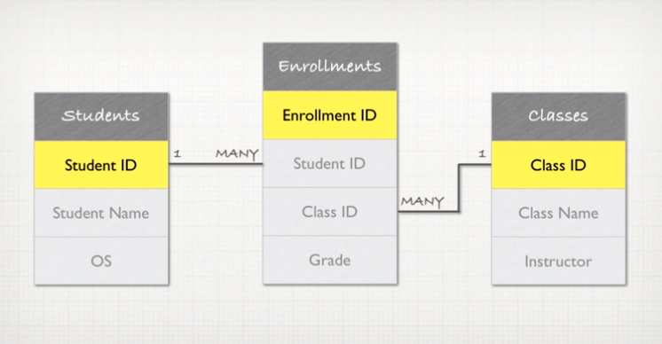

Cheat Sheet: SQL & Databases
Sunday, January 31st, 2016
Structured Query Language, or SQL (prounounce "sequel"), is a programming language designed to manipulate and manage data stored in relational databases. SQL operates through simple, declarative statements which keeps data accurate and secure, and helps maintain the integrity of databases, regardless of size. A relational database is a collection of data organized into one or more tables.These “tables” (aka – relations or entitities) format data into rows and columns, similar to a spreadsheet.Tables are defined, filled, queried, and updated. The columns of the table represent characteristics or attributes of the data while each row is a single instance of data in a table, containing a separate value for each column in the table. Rows must appear only once in a table.
Relational Database Management Systems (RDBMSs) lets you create, update, and administer a relational database. Most RDBMSs use SQL to access the database. Popular types of RDBMSs include SQLite, MySQL, PostgreSQL, Oracle DB, and SQL Server.
An SQL statement is text that the database recognizes as a valid command. They always end in a semicolon.
Components of an SQL statement:
-
Clause (aka – commands) = performs specific tasks in SQL and are always capitalized
-
table_name = the table that the command is applied to
-
Parameter = a list of columns, datatypes, or values that are passed to a clause as an argument
SQL Commands for Creating/Modifying a Table:
- CREATE TABLE = creates a new table
- INSERT INTO = adds a new row to a table
- UPDATE = edits a row in a table
- ALTER TABLE = changes an existing table
- DELETE FROM = deletes rows from a table
One of the primary objectives when using SQL is to retrieve information stored in a database. This is known to as “querying.”
SQL Commands for Querying a Table:
-
SELECT = used every time you want to query data from a table/database
-
SELECT DISTINCT = specifies that the statement is going to be a query that returns unique values in the specified column(s).
-
WHERE = a clause that indicates you want to filter the result set to include only rows where the following condition is true.
-
Operators used w/ the WHERE clause: =, !=, >, <, >=, <=
-
LIKE = a special operator to see if a pattern exists in the database
-
% = a wildcard character that matches zero or more missing letters in the patter. For example:
-
A% = matches all movies with names that begin with “A”
-
%a = matches all movies that end with “a”
-
%man% = matches all movies that contain the word “man” in its name
-
BETWEEN = a special operator to filter the results within a certain range. The values can be numbers, text or dates.
-
AND = a special operator that allows you to combine multiple conditions in a WHERE clause to make the result set more specific and useful (in other words, it allows to refine a query).
-
OR = similar to AND in that it combines multiple conditions in a WHERE clause. As long as one of the conditions is true, the row is added to the result set.
-
BETWEEN = a special operator to filter the results within a certain range. The values can be numbers, text or dates.
-
ORDER BY = a clause that indicates you want to sort the result set by a particular column either alphabetically or numerically.
-
DESC = a keyword in SQL applied to the ORDER BY clause to sort the results in descending order (high-low or Z-A)
-
ASC = sorts the results in ascending order (low-high or A-Z)
-
LIMIT = a clause that lets you specify the maximum number of rows the result set will have. This is very useful when filtering a result data set.
Another group of very useful SQL commands are aggregate functions, which allow us to compute a single result from a set of input values. For example, aggregate functions allow you to calculate the sum or average of a particular column.
Common aggregate functions include:
-
COUNT() = a function that takes the name of a column as an argument and counts the number of rows where the column is not NULL (empty). If you want to count every row, you pass * as the argument.
-
GROUP BY = a clause that is used in collaboration with SELECT to arrange identical data into groups.
-
SUM() = a function that takes the name of a column as an argument and returns the sum of all the values in that column.
-
MAX() = takes the name of a column as an argument and returns the largest value in a column.
-
MIN() = takes the name of a column as an argument and returns the smallest value in a column.
-
AVG() = takes the name of a column as an argument and returns the average value for that column
-
ROUND() = a function that takes a column name and an integer as an argument, rounding the values in the column to the number of decimal places specified by the integer.
Most of the time, data is distributed across multiple tables in the database. Using SQL, we can write queries that combine data from multiple tables that are related to one another. This is extremely powerful. The primary key is a unique identifier that connects multiple tables within a database. The specified primary key makes sure that none of the values in the column are NULL and that each value in the column is unique. A primary key is unique to each instance of an entity/table. Every instance must have one, and there cannot be any duplicates. The foreign key, on the other hand, identifies a column that contains the primary key of another table in the database. We use foreign keys and primary keys to connect rows in two different tables. One table’s foreign key holds the value of another table’s primary key. Foreign keys do not need to be unique and can be NULL.

Commands for interacting with mulitple tables include:
-
INNER JOIN = combines rows from different tables only if the join condition is true
-
LEFT OUTER JOIN = returns every row in the left table, and if the condition is not met, NULL values are used to fill in the columns from the right table.
-
AS = an SQL keyword that allows you to rename a column or table in the result set using an alias.
Cardinality of a Relationship:
-
One-to-One = a relationship used when two things have a single relationship to one another. Essentially, they are a pair:
-
country <=> country-capital = a country has a capital, and that capital city exists in only one country.
-
person <=> social security number = a person can have one SS#, and there’s only one SS# assigned to each person.

-
One-to-Many (many means “any number of,” so it can be 0) = a relationship used when one attribute of a table contains either a single or multiple relationships with an attrinbute of another table.
-
An example could be a "person" and "cars" table. One person can contain multiple cars.

-
Many-to-Many = two distinct entities (tables) are connected by a “join” table. A join table connects the two independent tables by keeping track of the two ids (foreign keys).
-
Consider 2 entities: students and classes. Many students enroll in the same class, while these same students enroll in multiple classes.
